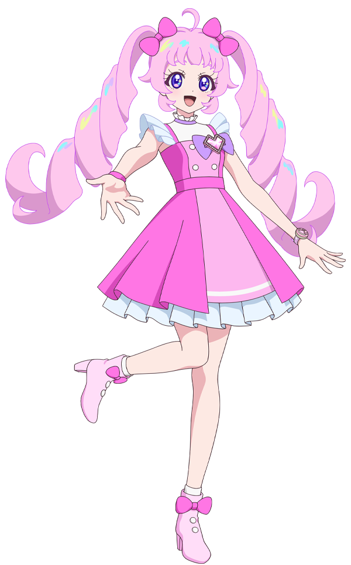
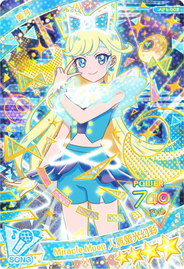

太精彩了！答對了！


只要是星期（Monday ~ Sunday），第一個字母一定要大寫！
• 有 is / are：直接移到最前面當隊長戴皇冠（大寫）！
例：It is Tuesday. ➔ Is today Tuesday?
• 是一般動作（go / take）：動詞不能亂跑，要請救兵 Do / Does 來幫忙！
例：原句劃線 zoo（地點）➔ 疑問詞請出 Where：
Where do you go at seven thirty?
① 換主角：問句問 you（你），回答要變回 I（我）。
② 時間加配件：回答具體鐘點（7:20），前面一定要繫上小領結 at！
③ 換標點：問句結尾戴耳環 問號 (?)，回答句結尾一定要打上 句點 (.)，千萬別順手寫問號！
例：I go to school at 7:20.
• 看到門票有加 s（tickets）代表很多張票，隊友必須是 are 而不是 is！
例：How much is the tickets? ❌ ➔ How much are the tickets? ⭕
• 表達喜歡動物時要用複數：I like panda. ❌ ➔ I like pandas. ⭕